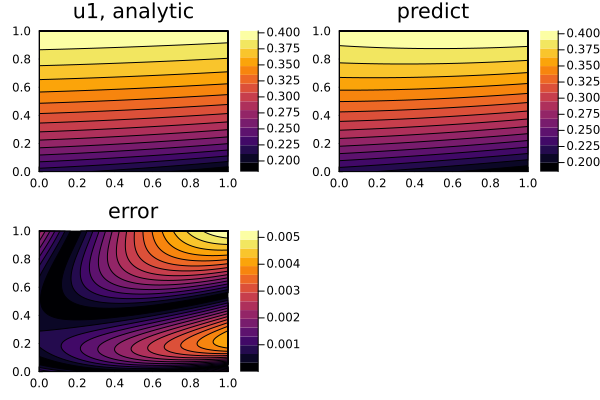
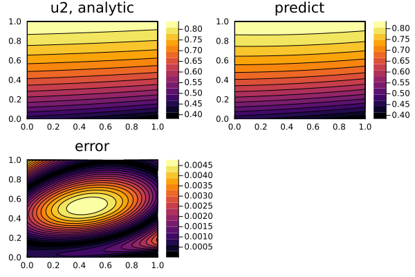

Nonlinear hyperbolic system of PDEs
We may also solve hyperbolic systems like the following
\[\begin{aligned} \frac{\partial^2u}{\partial t^2} &= \frac{a}{x^n} \frac{\partial}{\partial x}(x^n \frac{\partial u}{\partial x}) + u f(\frac{u}{w}) \\ \frac{\partial^2w}{\partial t^2} &= \frac{b}{x^n} \frac{\partial}{\partial x}(x^n \frac{\partial u}{\partial x}) + w g(\frac{u}{w}) \\ \end{aligned}\]
where f and g are arbitrary functions. With initial and boundary conditions:
\[\begin{aligned} u(0,x) &= k * [j_0(ξ(0, x)) + y_0(ξ(0, x))] \\ u(t,0) &= k * [j_0(ξ(t, 0)) + y_0(ξ(t, 0))] \\ u(t,1) &= k * [j_0(ξ(t, 1)) + y_0(ξ(t, 1))] \\ w(0,x) &= j_0(ξ(0, x)) + y_0(ξ(0, x)) \\ w(t,0) &= j_0(ξ(t, 0)) + y_0(ξ(t, 0)) \\ w(t,1) &= j_0(ξ(t, 0)) + y_0(ξ(t, 0)) \\ \end{aligned}\]
where $k$ is a root of the algebraic (transcendental) equation $f(k) = g(k)$, $j_0$ and $y_0$ are the Bessel functions, and $ξ(t, x)$ is:
\[\begin{aligned} \frac{\sqrt[]{f(k)}}{\sqrt[]{\frac{a}{x^n}}}\sqrt[]{\frac{a}{x^n}(t+1)^2 - (x+1)^2} \end{aligned}\]
We solve this with Neural:
using ModelingToolkit, NeuralPDE, SciMLBase, Lux, Optimization, OptimizationOptimJL, NonlinearSolve,
LineSearches
using Optim: BFGS
using SpecialFunctions
using Plots
using DomainSets: Interval
using IntervalSets: leftendpoint, rightendpoint
@parameters t, x
@variables u(..), w(..)
Dx = Differential(x)
Dt = Differential(t)
Dtt = Differential(t)^2
# Constants
a = 16
b = 16
n = 0
# Arbitrary functions
f(x) = x^2
g(x) = 4 * cos(π * x)
root(x, p) = g(x) - f(x)
# Analytic solution
k = solve(IntervalNonlinearProblem(root, (0.0, 1.0)), ITP()).u # k is a root of the algebraic (transcendental) equation f(x) = g(x)
ξ(t, x) = sqrt(f(k)) / sqrt(a) * sqrt(a * (t + 1)^2 - (x + 1)^2)
θ(t, x) = besselj0(ξ(t, x)) + bessely0(ξ(t, x)) # Analytical solution to Klein-Gordon equation
w_analytic(t, x) = θ(t, x)
u_analytic(t, x) = k * θ(t, x)
# Nonlinear system of hyperbolic equations
eqs = [Dtt(u(t, x)) ~ a / (x^n) * Dx(x^n * Dx(u(t, x))) + u(t, x) * f(u(t, x) / w(t, x)),
Dtt(w(t, x)) ~ b / (x^n) * Dx(x^n * Dx(w(t, x))) + w(t, x) * g(u(t, x) / w(t, x))]
# Boundary conditions
bcs = [u(0, x) ~ u_analytic(0, x),
w(0, x) ~ w_analytic(0, x),
u(t, 0) ~ u_analytic(t, 0),
w(t, 0) ~ w_analytic(t, 0),
u(t, 1) ~ u_analytic(t, 1),
w(t, 1) ~ w_analytic(t, 1)]
# Space and time domains
domains = [t ∈ Interval(0.0, 1.0),
x ∈ Interval(0.0, 1.0)]
# Neural network
input_ = length(domains)
n = 15
chain = [Chain(Dense(input_, n, σ), Dense(n, n, σ), Dense(n, 1)) for _ in 1:2]
strategy = QuadratureTraining()
discretization = PhysicsInformedNN(chain, strategy)
@named pdesystem = PDESystem(eqs, bcs, domains, [t, x], [u(t, x), w(t, x)])
prob = discretize(pdesystem, discretization)
sym_prob = symbolic_discretize(pdesystem, discretization)
pde_inner_loss_functions = sym_prob.loss_functions.pde_loss_functions
bcs_inner_loss_functions = sym_prob.loss_functions.bc_loss_functions
callback = function (p, l)
println("loss: ", l)
println("pde_losses: ", map(l_ -> l_(p.u), pde_inner_loss_functions))
println("bcs_losses: ", map(l_ -> l_(p.u), bcs_inner_loss_functions))
return false
end
res = Optimization.solve(
prob, BFGS(linesearch = LineSearches.BackTracking()); maxiters = 200, callback)
phi = discretization.phi
# Analysis
ts, xs = [leftendpoint(d.domain):0.01:rightendpoint(d.domain) for d in domains]
depvars = [:u, :w]
minimizers_ = [res.u.depvar[depvars[i]] for i in 1:length(chain)]
analytic_sol_func(t, x) = [u_analytic(t, x), w_analytic(t, x)]
u_real = [[analytic_sol_func(t, x)[i] for t in ts for x in xs] for i in 1:2]
u_predict = [[phi[i]([t, x], minimizers_[i])[1] for t in ts for x in xs] for i in 1:2]
diff_u = [abs.(u_real[i] .- u_predict[i]) for i in 1:2]
ps = []
for i in 1:2
p1 = plot(ts, xs, u_real[i], linetype = :contourf, title = "u$i, analytic")
p2 = plot(ts, xs, u_predict[i], linetype = :contourf, title = "predict")
p3 = plot(ts, xs, diff_u[i], linetype = :contourf, title = "error")
push!(ps, plot(p1, p2, p3))
endloss: 4.7215889016917725
pde_losses: [0.4067883986046623, 3.9063816490939747]
bcs_losses: [0.13750448495741519, 0.11019781513743625, 0.059931015506652585, 0.022543516045638798, 0.05725693636531878, 0.020985085980673193]
loss: 1.697917249868058
pde_losses: [0.15500368908574694, 1.2387331516724516]
bcs_losses: [0.024141475110986917, 0.17924184580136565, 0.004846545028145847, 0.049289667836190425, 0.005072557330131199, 0.041588318003039366]
loss: 1.0589983268240077
pde_losses: [0.08994692103165666, 0.7817598572403426]
bcs_losses: [0.0008525646798425979, 0.0005920191957144533, 0.0307527550132442, 0.054584832993073706, 0.032238792923443144, 0.0682705837466904]
loss: 1.0061594504132425
pde_losses: [0.3075385724148408, 0.3089972313455718]
bcs_losses: [0.04077738632339273, 0.01653847011073735, 0.009599783724108853, 0.14088017327806246, 0.021676466076600863, 0.16015136713992784]
loss: 0.8981936083244524
pde_losses: [0.19313005252560342, 0.345124720719843]
bcs_losses: [0.0409877308659299, 0.012166275406763622, 0.009855989478015104, 0.129163590063463, 0.022159206891963955, 0.14560604237287036]
loss: 0.5819666190940604
pde_losses: [0.10089909925714034, 0.10600868194396185]
bcs_losses: [0.029010115199517406, 0.018444619475441907, 0.005381310146111519, 0.1630320410252563, 0.014203172500767938, 0.1449875795458632]
loss: 0.511490007678982
pde_losses: [0.057577254591811525, 0.054826115004164414]
bcs_losses: [0.02295801115530236, 0.02524837611878917, 0.0027097392448531096, 0.17987809242321381, 0.010450481913458378, 0.15784193722738926]
loss: 0.45190828641482433
pde_losses: [0.018190565792032622, 0.04087096333772982]
bcs_losses: [0.02603842997080691, 0.024777209690198546, 0.002973234478515691, 0.17745117428911467, 0.012791037861538594, 0.14881567099488752]
loss: 0.4116692697806785
pde_losses: [0.013407864332987966, 0.003213657296522187]
bcs_losses: [0.03634927670396185, 0.023136068164623033, 0.005646505068996314, 0.17399142973366682, 0.020327928193927026, 0.1355965402859933]
loss: 0.39839337968033967
pde_losses: [0.005256754659458795, 0.004701870445223925]
bcs_losses: [0.039839904252329215, 0.0207286164145213, 0.006742199173679653, 0.16764939567477088, 0.02392118735483433, 0.12955345170552157]
loss: 0.3893990617518537
pde_losses: [0.004714197925260462, 0.005814173232321669]
bcs_losses: [0.04793214810670777, 0.01728640824105764, 0.009689028221217104, 0.15536162007380677, 0.030083423627752567, 0.11851806232372968]
loss: 0.3809400191228773
pde_losses: [0.004819380807838239, 0.004757455972444836]
bcs_losses: [0.05822912098014433, 0.01313122062752457, 0.015744137047105096, 0.13912110792236126, 0.038593430222515705, 0.10654416554294323]
loss: 0.3670898697287058
pde_losses: [0.0049110849811263915, 0.015090717099202195]
bcs_losses: [0.06470909767388981, 0.008061431884604906, 0.026154266398786454, 0.11355798588237141, 0.04484815937236293, 0.08975712643636166]
loss: 0.359215810777263
pde_losses: [0.005029758725039993, 0.01380599320469135]
bcs_losses: [0.06594729052630624, 0.006995821983931845, 0.03070691717037081, 0.10522142054768792, 0.04625883677328567, 0.08524977184594919]
loss: 0.3519690753171955
pde_losses: [0.005701350445676413, 0.015789524168420197]
bcs_losses: [0.06443074431999216, 0.006459210516447323, 0.03327884085660195, 0.09859562536667779, 0.045264059502747346, 0.08244972014063236]
loss: 0.3416311899162344
pde_losses: [0.006884418716549875, 0.019325150084129505]
bcs_losses: [0.0601598205360398, 0.006145851351847394, 0.035074925430195907, 0.0921252705620351, 0.04201093206032418, 0.07990482117511269]
loss: 0.31929907318173134
pde_losses: [0.01499325074187664, 0.03263359481607408]
bcs_losses: [0.04664914911490125, 0.00558364370220636, 0.036694091250128194, 0.07662971306000661, 0.03170857821103832, 0.07440705228549989]
loss: 0.3113649501031357
pde_losses: [0.016940863005761385, 0.037308965979021905]
bcs_losses: [0.04081109858143862, 0.005815275562142066, 0.035726169412602884, 0.07406397251397845, 0.027238489392751794, 0.0734601156554386]
loss: 0.3029271226515058
pde_losses: [0.019163950390733507, 0.040049451680079555]
bcs_losses: [0.03563788620146793, 0.005996791516874728, 0.03433115113807967, 0.07166560499386121, 0.023338879656073258, 0.07274340707433591]
loss: 0.2888801241491686
pde_losses: [0.01859792162140066, 0.04202568992215557]
bcs_losses: [0.02927666665464565, 0.0062894634152138055, 0.032023681190947915, 0.07016668251942867, 0.018817260387189404, 0.07168275843818692]
loss: 0.27121562396410337
pde_losses: [0.01787422648615628, 0.045379277968298236]
bcs_losses: [0.022773213445653383, 0.005998929939258252, 0.02980225399762252, 0.06669300595903999, 0.014595635295277106, 0.06809908087279755]
loss: 0.2478227191358567
pde_losses: [0.012069179216207877, 0.04953177383679999]
bcs_losses: [0.016374377575964036, 0.005397970588441152, 0.026573416888212912, 0.06432403832232349, 0.010710965851018545, 0.06284099685688872]
loss: 0.2184588276829028
pde_losses: [0.004067261520927185, 0.06006242737050211]
bcs_losses: [0.00946045984401319, 0.0030371658660219283, 0.02028264409300919, 0.06449100438424589, 0.00749617341968065, 0.04956169118450269]
loss: 0.20232792392911597
pde_losses: [0.004207302078700552, 0.040905924210600166]
bcs_losses: [0.010906132702601592, 0.0023464700034256246, 0.017865970678623232, 0.06744336513750111, 0.00801269409201761, 0.05064006502564611]
loss: 0.1749767838043249
pde_losses: [0.00880983833184923, 0.05268370512480178]
bcs_losses: [0.01791717213835948, 0.008787248340121546, 0.012191963453832434, 0.038641276151323366, 0.010670638432657243, 0.025274941831379846]
loss: 0.1632939767858643
pde_losses: [0.015441095202641981, 0.01602095396727532]
bcs_losses: [0.02854197017417893, 0.02435668773324529, 0.009686285684602424, 0.032251640474410884, 0.014299440643822442, 0.022695902905687054]
loss: 0.1564777202718346
pde_losses: [0.011052143479506045, 0.039845886410934055]
bcs_losses: [0.013506905284470792, 0.017250264955043573, 0.001693810917626897, 0.039601175370315815, 0.004030357485976464, 0.029497176367960957]
loss: 0.14165794871798237
pde_losses: [0.0038974132922487094, 0.012877929083296939]
bcs_losses: [0.006125751671342444, 0.001105727460965696, 0.0006464484098150639, 0.06286288848027774, 0.0012163155759766825, 0.05292547474405909]
loss: 0.1125219462773584
pde_losses: [0.00300920173348097, 0.00922022867065794]
bcs_losses: [0.015357178563373982, 0.011735070550064003, 0.004287032869927992, 0.035321401181898554, 0.005436937497692528, 0.02815489521026244]
loss: 0.10231373464858794
pde_losses: [0.002225392173783172, 0.0061535569661728285]
bcs_losses: [0.014876533455360115, 0.012515358855740644, 0.003846432693181872, 0.03200254108513525, 0.0050932411609188955, 0.025600678258295158]
loss: 0.07183881745143991
pde_losses: [0.0015368600706842702, 0.02299572931925268]
bcs_losses: [0.0087055787276527, 0.013959917566984361, 0.0017901418013609432, 0.009683701847062815, 0.0019167990175308167, 0.011250089100911326]
loss: 0.059021719771843964
pde_losses: [0.003863033765319524, 0.018231006765031626]
bcs_losses: [0.004943858687883985, 0.0055081391824213875, 0.0012937145676545658, 0.009780846086773789, 0.0007344123344509438, 0.014666708382308139]
loss: 0.04144001276649116
pde_losses: [0.0038349008742654665, 0.0037724771838366076]
bcs_losses: [0.002445356788969817, 0.0032167091974883997, 0.0005848532314314291, 0.010004345815279583, 0.0002861292023335351, 0.01729524047288632]
loss: 0.034305732710897846
pde_losses: [0.0058697554345569555, 0.012336679874518327]
bcs_losses: [0.0004279843980850551, 0.00456837224693514, 0.00017336534123048804, 0.0017762432795465325, 0.0006908425282879814, 0.00846248960773736]
loss: 0.020801711935182012
pde_losses: [0.0046913468092250514, 0.0010192744363067606]
bcs_losses: [0.0011012324987368224, 0.005900485103007918, 0.0007862745401693177, 0.0016202137135590835, 0.00018463866453964227, 0.005498246169637417]
loss: 0.01612529410003579
pde_losses: [0.002838374928124685, 0.0014820002957597772]
bcs_losses: [0.00040154651848346506, 0.002934678441374867, 0.00020519241974271884, 0.0011248913469586441, 0.00047901208952011974, 0.006659598060071516]
loss: 0.01105632850392112
pde_losses: [0.0019045500035018994, 0.0013904169607878334]
bcs_losses: [5.7009994798387244e-5, 0.0019232243652477642, 0.00011750442212448878, 0.000626504404008349, 0.0010709078289557136, 0.003966210524496686]
loss: 0.010239250507202802
pde_losses: [0.0017479883443378445, 0.002212117084636606]
bcs_losses: [6.785173723269739e-5, 0.002189716443974777, 0.00017833917626768002, 0.0008911135335056929, 0.0009080283165650508, 0.0020440958706824538]
loss: 0.008589351810009646
pde_losses: [0.001447497915932929, 0.002378372378320729]
bcs_losses: [0.00010308237049935042, 0.0013960328915199696, 0.0002863502526423087, 0.0004816583274644143, 0.0008035292589257918, 0.0016928284147041542]
loss: 0.007174112735517012
pde_losses: [0.0008791365179751716, 0.00260527533788075]
bcs_losses: [6.758661249994968e-5, 0.0009645589515723894, 0.000379380040999735, 0.0001576780306435425, 0.0005490995680611842, 0.001571397675884289]
loss: 0.006031379152368732
pde_losses: [0.0005741393000449042, 0.0024816943729389336]
bcs_losses: [4.0879758709120445e-5, 0.0007929154784590579, 0.0004421200047049009, 0.00012554401078603168, 0.00041248305110794367, 0.0011616031756178395]
loss: 0.0048358733763691035
pde_losses: [0.00038727725155232465, 0.0022723786420140025]
bcs_losses: [2.8575675857983128e-5, 0.0005361747221107191, 0.0005318306372948938, 8.428863351035785e-5, 0.0003108453281750693, 0.0006845024858537533]
loss: 0.004014563086953044
pde_losses: [0.0004333615664716057, 0.0016710055415010549]
bcs_losses: [1.4156219369521034e-5, 0.00043599676102059834, 0.0006080530439867882, 7.292365229328564e-5, 0.00026673906598544936, 0.0005123272363247412]
loss: 0.002689580074543303
pde_losses: [0.00044489903416979157, 0.000518717309008941]
bcs_losses: [4.720057278398492e-6, 0.00029003349274222374, 0.0005019588405720959, 9.470309804256714e-5, 0.00022517828655182237, 0.000609369956177463]
loss: 0.002287946557473268
pde_losses: [0.00020739498873420574, 0.00040895904929924717]
bcs_losses: [4.463412754599384e-6, 0.00022200729967869473, 0.0004259221804879666, 0.00010923200142472106, 0.00021250319906806822, 0.0006974644260257654]
loss: 0.0021965751538584005
pde_losses: [0.0001681198814683933, 0.0004011332749079733]
bcs_losses: [1.2250570455250548e-6, 0.0002741628640461185, 0.00039008101801949044, 0.0001016577373967799, 0.0001900273106684039, 0.000670168010305716]
loss: 0.0021687830946924805
pde_losses: [0.00017638902492344536, 0.0004020469733073119]
bcs_losses: [1.3427557775527422e-6, 0.00024733817897650207, 0.0003698782900621749, 0.0001089197251204296, 0.00018546540167319958, 0.0006774027448518646]
loss: 0.0021146190245860163
pde_losses: [0.0001957362695986185, 0.00040916420681564355]
bcs_losses: [2.2876412817236343e-6, 0.00022966463307294113, 0.0003296115778454401, 0.00011964067245977069, 0.0001710507863578674, 0.0006574632371540115]
loss: 0.0020182471846700396
pde_losses: [0.00021052715971814936, 0.0004096926811260417]
bcs_losses: [1.0169263133205933e-5, 0.0002114354383982405, 0.00028049955664464176, 0.00013512659841199528, 0.0001450690391173562, 0.0006157274481204087]
loss: 0.0018555649102827872
pde_losses: [0.0001848293646639834, 0.0004128776460024795]
bcs_losses: [3.116638820621745e-5, 0.00018706134713057925, 0.00020430216818738935, 0.0001484954166462325, 0.00011532679951985344, 0.0005715057799260522]
loss: 0.0016466682333728167
pde_losses: [0.0001292333729488381, 0.00038676343243273603]
bcs_losses: [5.786223383339327e-5, 0.0001662089456096979, 0.0001320309387698816, 0.00013550406971137136, 9.652625067269356e-5, 0.0005425389893942047]
loss: 0.0014224924786299057
pde_losses: [8.627579877413215e-5, 0.0002998199609001941]
bcs_losses: [6.988586191138157e-5, 0.00016212580208636174, 9.475424742393801e-5, 0.0001093476307006292, 0.00010541984374340788, 0.0004948633330898611]
loss: 0.001312640932628529
pde_losses: [7.045561804947083e-5, 0.000262777783252638]
bcs_losses: [6.249732111020645e-5, 0.0001360512186415397, 7.830541234034736e-5, 7.40675210598312e-5, 0.00013734783930810298, 0.0004911382188663926]
loss: 0.0012864246222285963
pde_losses: [6.586958290887932e-5, 0.0002651211285984325]
bcs_losses: [4.558296399660248e-5, 0.00013308809744051037, 8.818018600481291e-5, 5.805747738716996e-5, 0.0001502586137042961, 0.0004802665721878928]
loss: 0.001238550114272252
pde_losses: [5.658204726155575e-5, 0.0002311753005759266]
bcs_losses: [5.984597311958699e-5, 0.0001281626743517924, 8.181674790479063e-5, 6.566154858459592e-5, 0.00014157483154440066, 0.000473730990929603]
loss: 0.0012120889632809093
pde_losses: [4.8508051560346044e-5, 0.00022195177783145844]
bcs_losses: [7.237396381273681e-5, 0.00011307585390367536, 7.829367248925518e-5, 6.215573575142173e-5, 0.000132182242852604, 0.00048354766507941165]
loss: 0.001185586675454077
pde_losses: [4.7931258996077635e-5, 0.00021108955634866367]
bcs_losses: [9.009977939804832e-5, 9.105104556256627e-5, 7.584145868959041e-5, 5.7098519657870555e-5, 0.00012093463135172503, 0.000491540425449535]
loss: 0.0011645926433985104
pde_losses: [4.5769521568047224e-5, 0.00020035136609278335]
bcs_losses: [0.00010739607486304494, 7.284713055071067e-5, 7.493183804295559e-5, 4.704502783347631e-5, 0.00011023087495977411, 0.0005060208094877182]
loss: 0.0011506795715243553
pde_losses: [4.035953321319844e-5, 0.00019729776023984558]
bcs_losses: [0.00012118087154430602, 6.115478682044759e-5, 7.303155077330904e-5, 4.026525510225086e-5, 0.00010577782681825906, 0.0005116119870127387]
loss: 0.0011395310201692734
pde_losses: [3.45110991194766e-5, 0.00019467246802852567]
bcs_losses: [0.00012986392212751855, 5.478835936491675e-5, 7.074194125645439e-5, 3.539067029145144e-5, 0.00010358285687022271, 0.0005159797031107072]
loss: 0.001124469430108881
pde_losses: [2.9812118495567456e-5, 0.00019200652584280153]
bcs_losses: [0.0001360078608303514, 5.019051440046354e-5, 6.773753444571203e-5, 3.29293313588615e-5, 0.00010355000139629958, 0.0005122355433388238]
loss: 0.0010990693308729628
pde_losses: [2.434467974222702e-5, 0.00018662456275147347]
bcs_losses: [0.00013615162170274443, 4.827025423006131e-5, 6.553706224296667e-5, 3.1839861065114994e-5, 0.00010485386636060543, 0.0005014474227777693]
loss: 0.001065171873352288
pde_losses: [1.978308730371083e-5, 0.00017697654953693502]
bcs_losses: [0.00012544536098500503, 5.1219042760475945e-5, 6.733239320103122e-5, 3.5411003110572425e-5, 0.0001093975867345122, 0.0004796068497200454]
loss: 0.0010354776595529935
pde_losses: [1.9943695407552037e-5, 0.00016479168543811787]
bcs_losses: [0.00010351167418107883, 5.802552894364381e-5, 7.423912509613887e-5, 3.982258711666411e-5, 0.00011247896991123652, 0.0004626643934585615]
loss: 0.0010170377684829914
pde_losses: [2.40018182603253e-5, 0.00014799619089361822]
bcs_losses: [8.615400177229535e-5, 6.876729165786697e-5, 7.979852326194256e-5, 4.133912287393519e-5, 0.00011686607023738949, 0.00045211474952561826]
loss: 0.0010094109188539427
pde_losses: [3.0077237898705276e-5, 0.0001393257721248567]
bcs_losses: [7.596220343298959e-5, 7.61730981191576e-5, 8.144903590628412e-5, 3.816975633211071e-5, 0.00011399057458459045, 0.00045426324045524816]
loss: 0.0010064056685275624
pde_losses: [2.58804042381308e-5, 0.00013865336702744362]
bcs_losses: [7.93488765169546e-5, 7.814806039266562e-5, 7.974204623182689e-5, 3.656639989629526e-5, 0.00011237253899834242, 0.0004556939752259034]
loss: 0.0010013083965044341
pde_losses: [2.0583629338154702e-5, 0.00013638367873698956]
bcs_losses: [8.347559713460226e-5, 7.88672909138982e-5, 7.811158386100087e-5, 3.4228133670703045e-5, 0.0001099619771684852, 0.00045969650568060036]
loss: 0.0009922778348456984
pde_losses: [1.5490128859136278e-5, 0.00013085027577643542]
bcs_losses: [8.696102123352257e-5, 7.911170134163877e-5, 7.765281323840292e-5, 3.169388815493152e-5, 0.00010691005463115185, 0.000463607951610479]
loss: 0.0009745236174468009
pde_losses: [1.097211728349874e-5, 0.00011909177445026862]
bcs_losses: [8.76482439482748e-5, 7.622264706469748e-5, 8.01169229686021e-5, 2.9516529650013874e-5, 0.00010376205611655186, 0.0004671933259648934]
loss: 0.0009536511082121025
pde_losses: [9.9069584035423e-6, 0.00011021998779835285]
bcs_losses: [8.06903855837414e-5, 6.944512609796154e-5, 8.507665072159259e-5, 3.025524840743216e-5, 0.00010349962567687308, 0.0004645571255226065]
loss: 0.0009410466276556157
pde_losses: [8.804941597426336e-6, 0.00011313162580118721]
bcs_losses: [6.94483207895671e-5, 6.167956764972557e-5, 8.520651609001588e-5, 3.643394339226806e-5, 0.00010824190788912024, 0.00045809980444630537]
loss: 0.0009361306767810433
pde_losses: [7.850498391199316e-6, 0.00011442873071274131]
bcs_losses: [6.360583634259243e-5, 5.601852387689528e-5, 8.319271541782551e-5, 4.409956623821791e-5, 0.00011294853511844782, 0.00045398627068312373]
loss: 0.0009346096563681823
pde_losses: [7.76947524364869e-6, 0.00011405959819442191]
bcs_losses: [6.318098152769036e-5, 5.499037780833258e-5, 8.269975777372321e-5, 4.616791563259579e-5, 0.0001134130623495334, 0.00045232848783823644]
loss: 0.0009313930377279118
pde_losses: [7.712172800039235e-6, 0.00011259792396826802]
bcs_losses: [6.285285411697304e-5, 5.4427161527087135e-5, 8.174501746575078e-5, 4.897510538172449e-5, 0.00011453379963120181, 0.00044854900283686737]
loss: 0.0009247419299272646
pde_losses: [8.027164192138621e-6, 0.00010985887134600139]
bcs_losses: [6.290253573202823e-5, 5.577153883554714e-5, 8.069885923062882e-5, 5.094147977827425e-5, 0.0001149940904176482, 0.00044154739039499794]
loss: 0.000909023625279755
pde_losses: [9.25750047582308e-6, 0.00010480654583339502]
bcs_losses: [6.199307231370234e-5, 5.8234244513824646e-5, 8.049120921892571e-5, 5.377331453064232e-5, 0.00011423452739311567, 0.0004262332110003263]
loss: 0.0008741236922758936
pde_losses: [1.2636520623333492e-5, 9.302433467785781e-5]
bcs_losses: [6.144647637544081e-5, 6.551671641211167e-5, 8.327580086031743e-5, 5.4581768130275096e-5, 0.00010680180274682337, 0.00039684027244973397]
loss: 0.0007927525644326374
pde_losses: [2.0002807827458002e-5, 5.530192334956291e-5]
bcs_losses: [6.172170422089449e-5, 8.605730182724093e-5, 9.758358487368227e-5, 5.905703937705557e-5, 8.266842058180007e-5, 0.0003303597823749431]
loss: 0.0007796558707923117
pde_losses: [3.11753942853765e-5, 6.24069654054471e-5]
bcs_losses: [6.566675953888923e-5, 0.000148312066445175, 0.00011170527545461456, 4.0298643901092004e-5, 5.553173231661402e-5, 0.0002645590334451034]
loss: 0.0007473931058222077
pde_losses: [1.5341318442120184e-5, 7.198855712737894e-5]
bcs_losses: [5.179953863215106e-5, 7.25681191877798e-5, 0.00010209699541512013, 3.0397933586396016e-5, 6.32774843065674e-5, 0.00033992315912469417]
loss: 0.0007229513196087316
pde_losses: [8.79408059851118e-6, 4.208991556887805e-5]
bcs_losses: [4.930336437935115e-5, 4.4254312833236055e-5, 9.969113695565697e-5, 3.776095112643714e-5, 6.712649763219365e-5, 0.00037393106051446744]
loss: 0.0007058918257855065
pde_losses: [1.112344779787395e-5, 4.357715396435549e-5]
bcs_losses: [6.13942230225577e-5, 6.888372748916927e-5, 9.648030777981612e-5, 3.180453785080188e-5, 6.285099184841957e-5, 0.00032977743603251257]
loss: 0.0006869530209143154
pde_losses: [1.3323297443103033e-5, 3.0287175945124494e-5]
bcs_losses: [5.635256135966143e-5, 7.249124152037348e-5, 0.00010062915791772195, 3.5667022561297403e-5, 6.226135795601832e-5, 0.0003159412062110153]
loss: 0.0006817131197992151
pde_losses: [1.3509977057012046e-5, 2.787066501533205e-5]
bcs_losses: [5.373899888156763e-5, 6.134260046020913e-5, 0.00010165646272179877, 3.447211489413994e-5, 6.306144143952045e-5, 0.000326060859329635]
loss: 0.0006751225202322453
pde_losses: [1.4848774970424744e-5, 2.7408912769276997e-5]
bcs_losses: [5.3582265597647096e-5, 5.605606623537732e-5, 0.0001035796796297125, 3.237551116344311e-5, 6.341343569419253e-5, 0.000323857874172171]
loss: 0.0006645736247355056
pde_losses: [1.8016818223478394e-5, 2.926846017434702e-5]
bcs_losses: [5.429548247590612e-5, 5.400465744513904e-5, 0.00010779439734426886, 3.168922013034141e-5, 6.397270307103332e-5, 0.00030553188587099147]
loss: 0.000656086679827103
pde_losses: [2.0511242389463912e-5, 2.93812199225162e-5]
bcs_losses: [5.821440222109063e-5, 5.669376631998644e-5, 0.00011288118772184133, 3.134886156380615e-5, 6.417122541271114e-5, 0.00028288477427568725]
loss: 0.0006498807302306373
pde_losses: [2.5894754448818475e-5, 3.074319542663521e-5]
bcs_losses: [5.832962241967075e-5, 5.8870145000927976e-5, 0.00011810828355105743, 3.452292548180651e-5, 6.481166782171087e-5, 0.00025860013608001005]
loss: 0.0006414426630966285
pde_losses: [2.781404182140651e-5, 3.2683278898645476e-5]
bcs_losses: [6.0105759961014204e-5, 5.630891194327738e-5, 0.00012106919315722402, 3.668348128243964e-5, 6.290047513698795e-5, 0.00024387752089563325]
loss: 0.0006354766267917599
pde_losses: [3.589549703724285e-5, 3.900166704715296e-5]
bcs_losses: [6.439478802520642e-5, 5.2601622539235406e-5, 0.00012468250754432415, 4.253548256656873e-5, 6.452818937034937e-5, 0.00021183687266168]
loss: 0.0006021564529284898
pde_losses: [3.320435852596477e-5, 3.0021883030763347e-5]
bcs_losses: [5.927955536421314e-5, 4.148545959168943e-5, 0.00011327956073922741, 3.7466336755237916e-5, 6.15531657887275e-5, 0.00022586613313266624]
loss: 0.0005571378553438848
pde_losses: [4.534934467616262e-5, 3.148175401520238e-5]
bcs_losses: [5.3215187648663506e-5, 3.977338906169688e-5, 9.19704042924721e-5, 3.616953499521348e-5, 6.016353577378223e-5, 0.00019901470488069162]
loss: 0.0005359608899175286
pde_losses: [5.009540721500613e-5, 3.057789768124382e-5]
bcs_losses: [5.069498703272142e-5, 3.43929824398299e-5, 8.258574311467854e-5, 3.729913464355829e-5, 5.770019845052587e-5, 0.00019261453933996467]
loss: 0.0005071717703043176
pde_losses: [5.743301935500657e-5, 2.8511590728482022e-5]
bcs_losses: [4.84240381178451e-5, 3.0560211955972697e-5, 6.92605802504077e-5, 3.753355770724652e-5, 5.268506423742947e-5, 0.00018276370795192743]
loss: 0.00047586524377417675
pde_losses: [9.39246221788609e-5, 5.82119582788464e-5]
bcs_losses: [4.340592452106278e-5, 9.549806120919948e-6, 2.5026837686588377e-5, 4.299108416360807e-5, 3.672249510791625e-5, 0.00016603251571637402]
loss: 0.0004597827638578041
pde_losses: [8.750820690784659e-5, 3.876144522241469e-5]
bcs_losses: [4.445853337129115e-5, 8.262660607373827e-6, 2.680775957812675e-5, 3.744526999039926e-5, 3.846370059072668e-5, 0.00017807518758962518]
loss: 0.00044537842927109953
pde_losses: [8.749310163397321e-5, 3.401740582041567e-5]
bcs_losses: [4.3609385044341425e-5, 2.1455095872829953e-5, 2.8729138875617385e-5, 3.5255736026098454e-5, 3.7930329109030804e-5, 0.0001568882368887926]
loss: 0.0004413253162946109
pde_losses: [9.060897222038461e-5, 3.388945805502701e-5]
bcs_losses: [4.2072991841922266e-5, 2.348773410158798e-5, 2.8374799017859126e-5, 3.299795277163829e-5, 3.72742856483903e-5, 0.0001526191226378013]
loss: 0.0004350085162180165
pde_losses: [9.778864225492645e-5, 3.450454324532353e-5]
bcs_losses: [3.74995613705875e-5, 2.330525849428282e-5, 2.617472312599491e-5, 2.8261391527793774e-5, 3.839748305888915e-5, 0.00014907691314021835]
loss: 0.00042916359400992196
pde_losses: [0.00010090712390401085, 3.367230729838448e-5]
bcs_losses: [3.491661380958217e-5, 2.7052096124025295e-5, 2.4385944422256407e-5, 2.3187796432768e-5, 3.9997037643450663e-5, 0.0001450446743754441]
loss: 0.000417327020477544
pde_losses: [9.844413221265266e-5, 3.061942909058073e-5]
bcs_losses: [2.8050697705771607e-5, 2.8035146243759044e-5, 2.378741730771037e-5, 1.835829211799201e-5, 4.5232252594475796e-5, 0.00014479965320460174]
loss: 0.0003970600419441826
pde_losses: [8.436885862824255e-5, 2.537829361913328e-5]
bcs_losses: [2.334390355598789e-5, 3.2906469110785895e-5, 2.287010733029623e-5, 1.3536834047265023e-5, 5.169622653215035e-5, 0.00014295934912032137]
loss: 0.00036511354169677264
pde_losses: [5.80115702568149e-5, 2.3134619433972708e-5]
bcs_losses: [1.5917146359586567e-5, 3.0488752586076818e-5, 2.2563117609759043e-5, 1.1866960099387475e-5, 6.157162012813135e-5, 0.00014155975522304377]
loss: 0.0003336284626059767
pde_losses: [3.3962188264758334e-5, 2.6628375531910086e-5]
bcs_losses: [1.5214330071720512e-5, 2.722623369857336e-5, 2.10529904547884e-5, 1.1880872554305813e-5, 6.189376739214179e-5, 0.00013576970463777835]
loss: 0.00031919018069513584
pde_losses: [2.053197352443948e-5, 4.405266199400555e-5]
bcs_losses: [1.597110969879042e-5, 1.834476659606548e-5, 1.9880747194953624e-5, 1.7811007406447955e-5, 5.397659051199091e-5, 0.00012862132376844244]
loss: 0.000315468597802199
pde_losses: [1.7831809175284628e-5, 4.7748392632262997e-5]
bcs_losses: [1.737151308191272e-5, 1.3705224435192294e-5, 1.5881844035046416e-5, 2.8709776731283295e-5, 5.913039755357065e-5, 0.000115089640157646]
loss: 0.00030225971071014843
pde_losses: [1.905022805056102e-5, 3.383607897190937e-5]
bcs_losses: [1.8460992478137617e-5, 1.6207255955085725e-5, 1.7380021893516046e-5, 1.950648009294928e-5, 5.4614731462598156e-5, 0.0001232039218053912]
loss: 0.000296723189251537
pde_losses: [1.8967782880379732e-5, 3.3156273301510504e-5]
bcs_losses: [1.833503323405489e-5, 1.673185008249005e-5, 1.6347838145451353e-5, 1.8255279294748316e-5, 5.500547057962516e-5, 0.00011992366173327698]
loss: 0.0002685793403556465
pde_losses: [1.8690422460008073e-5, 3.839430954486759e-5]
bcs_losses: [1.8442108594043463e-5, 1.92491610447313e-5, 1.1342184179940133e-5, 1.2172585385443386e-5, 5.116134954646063e-5, 9.912721960015193e-5]
loss: 0.0002603092001088607
pde_losses: [2.1213378667850902e-5, 3.210663180142536e-5]
bcs_losses: [1.9025099529573045e-5, 1.9035059395658002e-5, 1.1423141863351333e-5, 1.059005536714928e-5, 4.9159020558939216e-5, 9.775681292491359e-5]
loss: 0.00025594124274644814
pde_losses: [2.655641042004245e-5, 3.476496359470274e-5]
bcs_losses: [1.8644059442903057e-5, 1.835964454441091e-5, 1.0553162258988528e-5, 1.1114350989176228e-5, 4.690601607486675e-5, 8.904263542135749e-5]
loss: 0.000253059327500756
pde_losses: [2.975083442985886e-5, 3.609662893868409e-5]
bcs_losses: [1.8193099444929325e-5, 1.7444245087118123e-5, 1.041182881726275e-5, 1.120368255798004e-5, 4.482736157386529e-5, 8.51316466510575e-5]
loss: 0.000247972378158755
pde_losses: [3.414914736298574e-5, 3.859774171758653e-5]
bcs_losses: [1.679515761620971e-5, 1.5974623004399537e-5, 9.88736824885751e-6, 1.2138452079316276e-5, 4.250613173494583e-5, 7.792375639445386e-5]
loss: 0.00024219856734060825
pde_losses: [3.4386644407227584e-5, 4.202990560828702e-5]
bcs_losses: [1.5759245507383567e-5, 1.3421451113062133e-5, 9.350340703089624e-6, 1.1737711416547649e-5, 4.06504311774635e-5, 7.486283740754718e-5]
loss: 0.00023485865184435647
pde_losses: [3.0398981869328467e-5, 4.951659722083633e-5]
bcs_losses: [1.4385609713438397e-5, 1.2648500656470988e-5, 8.320355838351728e-6, 1.330890008322613e-5, 3.966006509417469e-5, 6.661964136852974e-5]
loss: 0.00022682070353276747
pde_losses: [2.1511006140158614e-5, 5.5996979030670536e-5]
bcs_losses: [1.2766495545887378e-5, 1.0777630386859516e-5, 8.227553307708219e-6, 1.2663307831050503e-5, 3.995556558170463e-5, 6.492216570872808e-5]
loss: 0.0002261733490589725
pde_losses: [1.81619413162118e-5, 7.698220320409436e-5]
bcs_losses: [1.2706009362047748e-5, 9.72823536821214e-6, 6.75940338398863e-6, 1.3399721729241973e-5, 3.653869257648674e-5, 5.189714211868913e-5]
loss: 0.0002130063113200875
pde_losses: [1.8190238618968982e-5, 6.0717795359813514e-5]
bcs_losses: [1.0935952281784987e-5, 1.12557994329774e-5, 7.1732006345210165e-6, 1.2868595593784482e-5, 3.849797307578401e-5, 5.3366756322453115e-5]
loss: 0.00020341189816618386
pde_losses: [1.8444343097582705e-5, 6.104603237139739e-5]
bcs_losses: [9.250177620522893e-6, 1.0772039639080705e-5, 6.7835460815555555e-6, 1.1390404200138687e-5, 3.768074345360157e-5, 4.8044611702304325e-5]
loss: 0.00018477854948825419
pde_losses: [2.0380073226652702e-5, 7.001123963164816e-5]
bcs_losses: [6.580987830599668e-6, 9.96092690209933e-6, 6.063374736881294e-6, 6.548770047452851e-6, 3.197326989158165e-5, 3.3259907221338534e-5]
loss: 0.00017866896673005708
pde_losses: [1.7913131520051075e-5, 7.677997676883619e-5]
bcs_losses: [4.457069987846808e-6, 8.671922657290612e-6, 4.522245330655328e-6, 6.1189212550538574e-6, 3.3036668921030864e-5, 2.716903028929235e-5]
loss: 0.00017453567896464373
pde_losses: [1.7227284157391966e-5, 7.391515203902316e-5]
bcs_losses: [4.076794019132397e-6, 6.870982494555534e-6, 4.366177240508274e-6, 5.125973734925387e-6, 3.371332948604501e-5, 2.9239985793061987e-5]
loss: 0.00016692232868328682
pde_losses: [1.6197257206963197e-5, 7.928558552470003e-5]
bcs_losses: [3.7244055991086468e-6, 8.039655676954441e-6, 3.824772368349301e-6, 4.75933334879908e-6, 3.0215003227462793e-5, 2.0876315730949338e-5]
loss: 0.0001623764483777539
pde_losses: [1.568217742789018e-5, 8.716792692976655e-5]
bcs_losses: [3.2207296613593366e-6, 6.575916948892764e-6, 3.10709168406058e-6, 4.702126121618353e-6, 2.725192804436044e-5, 1.4668551559805704e-5]
loss: 0.00015628043592581434
pde_losses: [1.5438326934416788e-5, 8.576795432311106e-5]
bcs_losses: [3.1666871973248703e-6, 5.6469464798311e-6, 2.761118317463033e-6, 5.55094010623269e-6, 2.6480888085229353e-5, 1.1467574482205454e-5]
loss: 0.00015470918076558048
pde_losses: [1.4432284453302179e-5, 9.001506214266574e-5]
bcs_losses: [3.7035587913534653e-6, 5.642215936169334e-6, 1.82934409424496e-6, 5.336997878661137e-6, 2.5042422309955626e-5, 8.707295159228049e-6]
loss: 0.00015232635968298545
pde_losses: [1.4182706541905888e-5, 9.058385693767281e-5]
bcs_losses: [2.818243781025896e-6, 4.6195017956229015e-6, 1.8704253126093403e-6, 4.9571435822677415e-6, 2.496363820265801e-5, 8.33084352922287e-6]
loss: 0.00015156193271732564
pde_losses: [1.4172411669915285e-5, 8.88503143662768e-5]
bcs_losses: [2.35559732185007e-6, 4.1142543812156946e-6, 2.2257899383659712e-6, 5.115845137850303e-6, 2.5587152520408508e-5, 9.140567381443016e-6]
loss: 0.00015021763847313457
pde_losses: [1.3837589898886811e-5, 9.024751696571952e-5]
bcs_losses: [1.961392007860223e-6, 4.998578843672381e-6, 2.142365734147932e-6, 4.530837055744118e-6, 2.5056235126484426e-5, 7.443122840619158e-6]
loss: 0.00014888844441094247
pde_losses: [1.3497136971928208e-5, 9.178142681093431e-5]
bcs_losses: [1.4389289635778076e-6, 4.594162123650276e-6, 1.9781072388268104e-6, 4.534924344933662e-6, 2.4874030349278106e-5, 6.189727607813278e-6]
loss: 0.00014635361670297786
pde_losses: [1.3258067913505481e-5, 8.982384816301428e-5]
bcs_losses: [1.1410504401847419e-6, 5.011175681125881e-6, 1.9849751423843224e-6, 4.561200747515537e-6, 2.52929581876716e-5, 5.280340427575997e-6]
loss: 0.00013677900186514938
pde_losses: [1.200080715580658e-5, 8.119981076251108e-5]
bcs_losses: [9.393175882970137e-7, 4.74187509312464e-6, 2.2851395575009533e-6, 5.201121142671988e-6, 2.721866821289086e-5, 3.192262352346272e-6]
loss: 0.0001273535853626378
pde_losses: [1.132724143397569e-5, 7.15956576234746e-5]
bcs_losses: [1.991401459827742e-6, 4.288413550230537e-6, 2.623868175817518e-6, 3.7219326932908425e-6, 2.9110388241660355e-5, 2.6946821843605243e-6]
loss: 0.00011455747581106657
pde_losses: [1.1702873999696987e-5, 5.4871353032554874e-5]
bcs_losses: [3.6461012313463078e-6, 3.6356768067488056e-6, 3.570568831298432e-6, 2.6348961159249083e-6, 3.2492896608500207e-5, 2.0031091849960436e-6]
loss: 0.00011164154408894143
pde_losses: [1.162255439184519e-5, 5.07463833839997e-5]
bcs_losses: [4.086655745300425e-6, 3.847290525730308e-6, 3.7847381718184126e-6, 1.8551745103681768e-6, 3.347035087378308e-5, 2.228396486096131e-6]
loss: 0.00010580719455361233
pde_losses: [1.1852225393078915e-5, 4.35853534978226e-5]
bcs_losses: [3.761733051996733e-6, 3.2658886115998973e-6, 4.45887588242101e-6, 1.1982389202869307e-6, 3.491951048752085e-5, 2.7653687088853966e-6]
loss: 9.833827158784323e-5
pde_losses: [9.80119095499863e-6, 3.2862464744361936e-5]
bcs_losses: [2.631080676697821e-6, 5.805597308121971e-6, 4.093381072773475e-6, 1.4606695738682944e-6, 3.2589436383290196e-5, 9.094450873730905e-6]
loss: 9.176711756879761e-5
pde_losses: [9.935196675761593e-6, 3.447545932438721e-5]
bcs_losses: [1.2169129829174045e-6, 3.874310737588922e-6, 4.25647891453655e-6, 8.297392590670149e-7, 3.141733292581737e-5, 5.761686748721538e-6]
loss: 8.64159651492979e-5
pde_losses: [1.1592334227636475e-5, 2.5267288002353486e-5]
bcs_losses: [1.3233622752895584e-6, 2.2841697925260894e-6, 5.827878017774636e-6, 1.0034517255030216e-6, 3.3781306395592824e-5, 5.3361747126218175e-6]
loss: 8.157050998907057e-5
pde_losses: [1.2014672605331188e-5, 2.298276172926527e-5]
bcs_losses: [1.31833357874181e-6, 3.2533673500981423e-6, 5.046378529474604e-6, 1.0802446817939998e-6, 3.0928617442772006e-5, 4.946134071593547e-6]
loss: 7.739744870712868e-5
pde_losses: [1.148070825245603e-5, 2.2720890986812205e-5]
bcs_losses: [1.0522197567117899e-6, 4.032115413151669e-6, 4.466871583276774e-6, 1.369033251115361e-6, 2.7413501933004485e-5, 4.862107530600363e-6]
loss: 7.579369837402437e-5
pde_losses: [1.0591692838936702e-5, 2.4300464791732708e-5]
bcs_losses: [1.1782582851558104e-6, 2.938350468009647e-6, 4.111265522500161e-6, 1.7644542478664147e-6, 2.58781506790413e-5, 5.031061540781619e-6]
loss: 7.434138490680078e-5
pde_losses: [1.03827056774548e-5, 2.343280909061409e-5]
bcs_losses: [1.0572384459314978e-6, 2.777870217431532e-6, 4.815238857114119e-6, 1.4812241028177539e-6, 2.632729729354483e-5, 4.067001221892148e-6]
loss: 7.339168436436813e-5
pde_losses: [1.0006931702808702e-5, 2.2443327108663664e-5]
bcs_losses: [1.0576778638575039e-6, 2.4962293360945e-6, 5.307472137014586e-6, 1.4097744726744383e-6, 2.670866543430407e-5, 3.96160630895066e-6]
loss: 7.251955484672056e-5
pde_losses: [9.688224552200006e-6, 2.2375057586972996e-5]
bcs_losses: [1.0394430935999243e-6, 2.4681850986667753e-6, 5.176202694825956e-6, 1.297510483171185e-6, 2.6723720567886607e-5, 3.7512107693971096e-6]
loss: 7.149862730877884e-5
pde_losses: [9.563949312618222e-6, 2.2470906142783146e-5]
bcs_losses: [9.426601998354523e-7, 2.316417459098636e-6, 4.748706799830494e-6, 1.184072122607763e-6, 2.6149760187464663e-5, 4.122155084540457e-6]
loss: 7.007924039662352e-5
pde_losses: [9.504361074072166e-6, 2.353695244517497e-5]
bcs_losses: [6.440413410557344e-7, 2.788313611659505e-6, 3.6454134026791336e-6, 1.0491973547663045e-6, 2.4627960141488237e-5, 4.283001025727473e-6]
loss: 6.909505601046444e-5
pde_losses: [9.57927057748096e-6, 2.3995007949319635e-5]
bcs_losses: [5.299563455204394e-7, 3.006825987488218e-6, 2.7172008822427576e-6, 1.146094321886066e-6, 2.3220253542782436e-5, 4.900446403743939e-6]
loss: 6.840678533841124e-5
pde_losses: [9.562119291798225e-6, 2.3970702656502247e-5]
bcs_losses: [5.6815673479848e-7, 3.5541724994152415e-6, 2.2624225779985216e-6, 1.0969952921516908e-6, 2.2627930374597806e-5, 4.76428591114904e-6]
loss: 6.759998117273532e-5
pde_losses: [9.79235747727993e-6, 2.3224737431771307e-5]
bcs_losses: [6.255428539441788e-7, 3.3578325682105714e-6, 2.017771332369722e-6, 1.0436380951210108e-6, 2.2353206542343085e-5, 5.184894871695521e-6]
loss: 6.62662722957965e-5
pde_losses: [1.0002626908133361e-5, 2.1468736645814384e-5]
bcs_losses: [7.157408597097872e-7, 3.208616137830384e-6, 1.967103806827501e-6, 8.488096538696488e-7, 2.270752688743037e-5, 5.347111396181067e-6]
loss: 6.455331269721657e-5
pde_losses: [9.776144156194927e-6, 1.928150911242083e-5]
bcs_losses: [8.282079837351158e-7, 3.0863902057161847e-6, 2.0439049783691315e-6, 8.280932623835495e-7, 2.30739700575592e-5, 5.635092940837628e-6]
loss: 6.298806359155451e-5
pde_losses: [9.251614909055242e-6, 1.690468053961431e-5]
bcs_losses: [9.619779202197377e-7, 2.8109331262792877e-6, 2.4135792103703777e-6, 1.0234928158915014e-6, 2.3959657227054255e-5, 5.662127843069797e-6]
loss: 6.205164827161771e-5
pde_losses: [8.668949348106072e-6, 1.579171994946121e-5]
bcs_losses: [9.072462629508707e-7, 3.065554545994743e-6, 2.47772456355874e-6, 1.5422772756582324e-6, 2.353978476161861e-5, 6.0583915642692334e-6]
loss: 6.125531641157596e-5
pde_losses: [8.43996451106115e-6, 1.5099333671891264e-5]
bcs_losses: [7.813015973101153e-7, 2.8890971439079824e-6, 2.772043100616162e-6, 1.9248150222987386e-6, 2.3735209850506664e-5, 5.613551513983888e-6]
loss: 6.078872735697507e-5
pde_losses: [8.18715639094792e-6, 1.5053212118820946e-5]
bcs_losses: [6.716579218414686e-7, 2.8735132493708736e-6, 2.8373045864861646e-6, 2.0466361111869273e-6, 2.3453516371850634e-5, 5.66573060647014e-6]
loss: 5.999899907933743e-5
pde_losses: [7.543998548860293e-6, 1.5173643620290136e-5]
bcs_losses: [5.310973975093579e-7, 2.9925047797021804e-6, 3.0281554325581733e-6, 2.018595804487616e-6, 2.2986789347777394e-5, 5.724214148152281e-6]
loss: 5.963671150035617e-5
pde_losses: [7.251833139776951e-6, 1.5066454420335322e-5]
bcs_losses: [4.927734719265855e-7, 2.9465289256040275e-6, 3.160786550002471e-6, 1.8730434723099718e-6, 2.3039508689798767e-5, 5.80578283060208e-6]
loss: 5.9048390220561736e-5
pde_losses: [6.915554389209031e-6, 1.4756859287728255e-5]
bcs_losses: [4.5399528308380296e-7, 2.9444350562017343e-6, 3.200615653506464e-6, 1.648964534924056e-6, 2.3255687857854206e-5, 5.872278158054183e-6]
loss: 5.848309702604448e-5
pde_losses: [6.787243837386154e-6, 1.4403371234482427e-5]
bcs_losses: [4.378885682346982e-7, 2.89541632974957e-6, 3.065051543777117e-6, 1.5499302888613477e-6, 2.3412124802466178e-5, 5.932070421086986e-6]
loss: 5.7578504980895895e-5
pde_losses: [6.7330395588583776e-6, 1.4015672595672292e-5]
bcs_losses: [4.4673852314866993e-7, 2.8768697333317232e-6, 2.6569495252352087e-6, 1.5254613028476389e-6, 2.3287830692842173e-5, 6.035943048959807e-6]
loss: 5.6506645968826095e-5
pde_losses: [6.66184192673481e-6, 1.3887378496476454e-5]
bcs_losses: [4.7440687217782123e-7, 2.8249499953361823e-6, 2.1872028489487283e-6, 1.556604705248785e-6, 2.2623752236635094e-5, 6.290508887268218e-6]
loss: 5.525704995108225e-5
pde_losses: [6.407671915776971e-6, 1.4118197967622353e-5]
bcs_losses: [5.454502122169211e-7, 2.8830268627662074e-6, 1.7189935447296654e-6, 1.532684580314847e-6, 2.1283742617705447e-5, 6.767282249949834e-6]
loss: 5.3828842124122416e-5
pde_losses: [5.835196884668798e-6, 1.4615991688905773e-5]
bcs_losses: [7.472451811071708e-7, 2.887135301671783e-6, 1.390607542152743e-6, 1.305493003681196e-6, 1.9641097662038095e-5, 7.406074859896854e-6]
loss: 5.212002701391859e-5
pde_losses: [4.935977914958425e-6, 1.4967727839800048e-5]
bcs_losses: [1.295571558077521e-6, 3.0757840417341597e-6, 1.1343913094217794e-6, 8.450949051126774e-7, 1.7703267227005626e-5, 8.162212217808355e-6]
loss: 5.121473574163445e-5
pde_losses: [4.355819878183579e-6, 1.6072708842050863e-5]
bcs_losses: [1.5950491560426144e-6, 2.647706208686912e-6, 9.594763342721851e-7, 5.361376174284507e-7, 1.6693359179567793e-5, 8.354478525402046e-6]
loss: 4.921695016514979e-5
pde_losses: [3.7118367300957327e-6, 1.573081616895928e-5]
bcs_losses: [2.3038597243146982e-6, 2.757109051974973e-6, 7.367204507705803e-7, 3.2326206261529136e-7, 1.5240404211761847e-5, 8.412941764657391e-6]
loss: 4.796389701539084e-5
pde_losses: [3.604354647946716e-6, 1.5950470252838038e-5]
bcs_losses: [1.974289269180064e-6, 2.6880555644632464e-6, 6.089159491126549e-7, 3.940228592370892e-7, 1.5133618245526841e-5, 7.610170227086195e-6]
loss: 4.6208165655062166e-5
pde_losses: [3.6460936294685017e-6, 1.6667255791955e-5]
bcs_losses: [1.127392335114531e-6, 3.518190567697863e-6, 4.709152669170695e-7, 6.706777054528883e-7, 1.5264377340606168e-5, 4.843263017850141e-6]
loss: 4.544304187354517e-5
pde_losses: [3.665508594510408e-6, 1.6320210172271666e-5]
bcs_losses: [8.399416329535332e-7, 3.2952147434626524e-6, 5.408581265318733e-7, 7.79983672738034e-7, 1.5409967199012633e-5, 4.591357732064368e-6]
loss: 4.456079532132272e-5
pde_losses: [3.739578078144769e-6, 1.567626201688165e-5]
bcs_losses: [7.633472513162635e-7, 3.4797874396947068e-6, 6.183476151323162e-7, 8.331957359370973e-7, 1.557995996893544e-5, 3.870317215280478e-6]
loss: 4.433443870463955e-5
pde_losses: [3.786096060086631e-6, 1.578365274824983e-5]
bcs_losses: [8.355976346301833e-7, 3.844261536641917e-6, 5.745387167483395e-7, 1.0035104104940045e-6, 1.5031279201655748e-5, 3.4755023961328963e-6]
loss: 4.423338197195378e-5
pde_losses: [3.870677448270293e-6, 1.5720016823160597e-5]
bcs_losses: [8.833467785626297e-7, 3.830882182825184e-6, 5.82255239310998e-7, 1.033844346407361e-6, 1.4749982468675729e-5, 3.5623766847409875e-6]
loss: 4.416040079319059e-5
pde_losses: [3.921115610451686e-6, 1.5678192704288553e-5]
bcs_losses: [8.497563728659517e-7, 3.8545984459848025e-6, 5.863254332699782e-7, 1.0687836852430998e-6, 1.4641277451752939e-5, 3.5603510893335804e-6]
loss: 4.405537388553249e-5
pde_losses: [3.9291982963341e-6, 1.577452132523829e-5]
bcs_losses: [9.030127007444263e-7, 3.881396303122818e-6, 5.374506485327227e-7, 1.139969872866498e-6, 1.4256396530014033e-5, 3.6334282086796025e-6]
loss: 4.3913763965924794e-5
pde_losses: [3.947179000635426e-6, 1.5878781126710067e-5]
bcs_losses: [8.97330243781365e-7, 3.8830772995743596e-6, 4.968309037611303e-7, 1.22677731526025e-6, 1.400166918077793e-5, 3.5821188954242687e-6]
loss: 4.373407585142776e-5
pde_losses: [3.887055025944672e-6, 1.60320350157869e-5]
bcs_losses: [9.457183744427889e-7, 3.88938152965683e-6, 4.2661922802966404e-7, 1.3186636722954566e-6, 1.37169369349924e-5, 3.5176660702790433e-6]
loss: 4.3455564367846174e-5
pde_losses: [3.813290103177442e-6, 1.6150800637127725e-5]
bcs_losses: [1.0157948814943217e-6, 3.911161831386986e-6, 3.62722466912521e-7, 1.4444687843758458e-6, 1.3397757479815128e-5, 3.3595681835562045e-6]
loss: 4.297998069592117e-5
pde_losses: [3.705141251929861e-6, 1.6166735304893536e-5]
bcs_losses: [1.122187186996737e-6, 3.917826149219564e-6, 3.049616142896384e-7, 1.6106790682656075e-6, 1.3015004595741644e-5, 3.13744552458458e-6]
loss: 4.201403617378002e-5
pde_losses: [3.6388154805310753e-6, 1.5881756351032267e-5]
bcs_losses: [1.2916702726873408e-6, 3.8996228716415025e-6, 2.4514544568073993e-7, 1.9472623363181004e-6, 1.2319320507890876e-5, 2.7904429079981092e-6]
loss: 4.043959559404483e-5
pde_losses: [3.6925491465525293e-6, 1.506837652828559e-5]
bcs_losses: [1.4012261730343997e-6, 3.822657693759826e-6, 1.8874228974628026e-7, 2.5207849505195517e-6, 1.139363970242307e-5, 2.351619109723587e-6]
loss: 3.815555458910449e-5
pde_losses: [3.936451407372609e-6, 1.3100450357786884e-5]
bcs_losses: [1.233833059019799e-6, 3.7725055096393175e-6, 1.560478766887994e-7, 3.386510208851295e-6, 1.0408167703796623e-5, 2.161588465949163e-6]
loss: 3.762949130345302e-5
pde_losses: [3.8220791574386825e-6, 1.3608809574906612e-5]
bcs_losses: [8.804193762359737e-7, 3.4020025054674558e-6, 2.3262521386344756e-7, 3.374436197065289e-6, 1.0527291334055912e-5, 1.7818279444196508e-6]
loss: 3.610486288218353e-5
pde_losses: [3.60101169478088e-6, 1.2049829270777206e-5]
bcs_losses: [4.622984451149112e-7, 3.151305334364691e-6, 3.2556688498058087e-7, 3.114017414589437e-6, 1.1570331865629577e-5, 1.830501971946249e-6]
loss: 3.488176722297346e-5
pde_losses: [3.984839235202966e-6, 1.0488183825868537e-5]
bcs_losses: [5.306377444539391e-7, 3.288047813116857e-6, 3.285846069921429e-7, 3.479045232433422e-6, 1.0757605580220558e-5, 2.024823184685042e-6]
loss: 3.418560431554146e-5
pde_losses: [3.930853839464914e-6, 1.0467723053789487e-5]
bcs_losses: [6.749570172694637e-7, 2.886600472149957e-6, 3.4273328774430136e-7, 3.3699645121527183e-6, 1.0580614620718088e-5, 1.9321575122525297e-6]
loss: 3.3735760307526676e-5
pde_losses: [3.84557363906352e-6, 1.0153353241013875e-5]
bcs_losses: [7.04426296956032e-7, 2.755233702358441e-6, 3.169181324832656e-7, 3.3217621269519415e-6, 1.065208397380293e-5, 1.9864091948966744e-6]
loss: 3.323780105170764e-5
pde_losses: [3.8232066891965854e-6, 9.80284811609915e-6]
bcs_losses: [6.492772755932954e-7, 2.443013651256743e-6, 3.359335052606921e-7, 3.294414001258198e-6, 1.0800525843363297e-5, 2.0885819696796757e-6]
loss: 3.231344584745347e-5
pde_losses: [3.728467231048813e-6, 9.2787472309249e-6]
bcs_losses: [7.432612627739681e-7, 1.7380309596219175e-6, 4.2785575362683066e-7, 3.2411382402919638e-6, 1.0885832025295312e-5, 2.2701131438697694e-6]
loss: 3.209530751467379e-5
pde_losses: [3.674284021434276e-6, 9.073570308420675e-6]
bcs_losses: [7.608057674539611e-7, 1.6024266329796774e-6, 4.7229252478034864e-7, 3.198096283534282e-6, 1.1018437185769584e-5, 2.2953947903009864e-6]
loss: 3.1980202279831376e-5
pde_losses: [3.6304375002561073e-6, 9.010643435886765e-6]
bcs_losses: [7.901807367528193e-7, 1.693444171417448e-6, 5.194545491205844e-7, 3.1395338419290465e-6, 1.0999143497277779e-5, 2.1973645471908286e-6]
loss: 3.190956042463615e-5
pde_losses: [3.6762883260296356e-6, 8.844891568148899e-6]
bcs_losses: [7.549689186537593e-7, 1.6397402791092828e-6, 5.47830490805891e-7, 3.1830624201768458e-6, 1.1086509995159376e-5, 2.1762684265524656e-6]
loss: 3.183105164588121e-5
pde_losses: [3.728022624710616e-6, 8.719083573604208e-6]
bcs_losses: [7.236113196261389e-7, 1.559902229158868e-6, 5.157446275291996e-7, 3.2585517994058497e-6, 1.1121986576616692e-5, 2.204148895229632e-6]
loss: 3.164985847606219e-5
pde_losses: [3.953377579265879e-6, 8.400488133157981e-6]
bcs_losses: [7.029266669289141e-7, 1.366135409657424e-6, 5.16745867187824e-7, 3.5853652423023157e-6, 1.0872657327016393e-5, 2.2521622505454573e-6]
loss: 3.155670174146461e-5
pde_losses: [4.0865262297589745e-6, 8.211042293193543e-6]
bcs_losses: [6.956183236644542e-7, 1.3292289825481519e-6, 5.516508568215253e-7, 3.7506681418495485e-6, 1.0684220145195108e-5, 2.2477467684333005e-6]
loss: 3.1489198792522966e-5
pde_losses: [4.30953402284092e-6, 7.947378284101142e-6]
bcs_losses: [7.554845677523355e-7, 1.2736896274922324e-6, 7.005459367144648e-7, 3.971182828079954e-6, 1.0295222739688455e-5, 2.2361607858534643e-6]
loss: 3.1430817864541285e-5
pde_losses: [4.323172701983305e-6, 7.966127731425568e-6]
bcs_losses: [8.018318888849584e-7, 1.3448713128722397e-6, 7.678730885658227e-7, 3.905517286912399e-6, 1.0100846937150325e-5, 2.220576916746665e-6]
loss: 3.1398821715049194e-5
pde_losses: [4.335543462275729e-6, 7.92500228746765e-6]
bcs_losses: [8.110695285975348e-7, 1.344712676646562e-6, 8.057045240400726e-7, 3.85212616192251e-6, 1.0085268471431598e-5, 2.239394602667535e-6]
loss: 3.132792633954546e-5
pde_losses: [4.373881188947229e-6, 7.820781596220259e-6]
bcs_losses: [8.380879918714174e-7, 1.3261857821890616e-6, 9.302362939218918e-7, 3.7086431753236974e-6, 1.0017638308334197e-5, 2.312472002737712e-6]
loss: 3.125334789774027e-5
pde_losses: [4.3419460644952095e-6, 7.758811180549182e-6]
bcs_losses: [8.421132435339865e-7, 1.3003428634934333e-6, 9.859980739801722e-7, 3.5957531756099125e-6, 1.0034008496203807e-5, 2.3943747998745688e-6]ps[1]
ps[2]